01 · INTRODUCTION
Overview
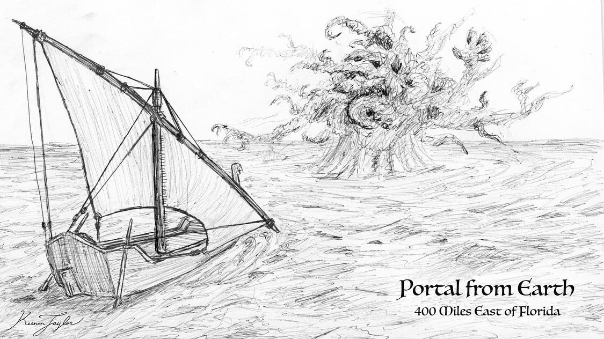
The Great Portal, known in Amanetran as the Rahar, is the most consequential biological phenomenon in the history of Kaimere. It is responsible for the introduction of virtually all multicellular life that defines the planet's modern ecosystems, having collected and replicated organisms from Earth over hundreds of millions of years. Its activities have produced an extraordinary assemblage of terrestrial and aquatic organisms, including dinosaurs, pterosaurs, marine reptiles, mammals, flowering plants, and fungi. Although these organisms have subsequently evolved independently on Kaimere, their ultimate ancestry lies on Earth. The Portal is therefore the principal agent responsible for the unusual composition and exceptional biodiversity of the planet's visible biosphere.
The Portal is a massive collective of microscopic organisms, organized into a clonal swarm with a form of distributed cognition. Individually, its constituent organisms are too small to be observed directly, but collectively they can produce a visible haze or cloud. Its intelligence is more appropriately compared to a computational system than to that of an animal. It gathers information, processes it through collective activity, and undertakes actions intended to maintain or optimize its territory. The ability to coordinate its constituent organisms across extensive distances is fundamental to its unusual biology.
The Portal's defining characteristic is its capacity to collect molecular information from distant environments and use that information to reproduce resources within its own territory. It accomplishes this through satellite swarms, which separate from the principal population and travel outward to acquire water, minerals, food, and biological material. These satellites examine the composition of what they encounter and transmit the resulting information back to the main swarm. The principal population can then use the information as a blueprint for reproducing the collected material from elements available within its own environment.
This ability to reproduce complex biological structures eventually allowed the Portal to collect organisms from Earth. A satellite swarm originating from Kaimere reached Earth hundreds of millions of years ago, where it began examining and harvesting the planet's living organisms. The information acquired through this process was transmitted back to Kaimere, where the principal swarm reproduced the organisms. The earliest such introductions occurred during Earth's Late Devonian, and the process continued through successive geological periods, producing the extraordinary biological diversity of Kaimere.
The Portal's activities are not random introductions of foreign organisms. They appear to be associated with the ecological condition of its territory, particularly the biodiversity and productivity of the region surrounding the principal swarm. Under natural conditions, it maintains what it perceives to be a healthy range of biodiversity, expanding or contracting its territory according to environmental circumstances. Its harvesting activity also fluctuates over geological time. Periods of relative ecological stability are characterized by long intervals without major introductions, while mass extinctions and substantial environmental disturbances can provoke extensive harvesting from Earth.

The region most directly influenced by the Portal is known as the Known World. It encompasses a territory roughly comparable in scale to the continental United States, including Eastern Arvel, Southern Ni'Khar, Pakardia, and the intervening Khalin islands. This region possesses an exceptional concentration of biological diversity because it has experienced repeated introductions from different periods and geographical regions of Earth. Its ecosystems consequently contain organisms with highly specialized ecological roles and unusual combinations of evolutionary lineages. Outside this region, Kaimere remains populated by Earth-derived organisms, but the absence of regular waves of introductions has allowed comparatively conventional ecological communities to develop.
The Portal's present range is not necessarily its original or permanent territory. It has shifted repeatedly in response to environmental conditions, geological events, and the presence of other powerful indigenous organisms. Its territory generally contracts during warm and humid periods, when ecological productivity is high and less space is apparently required to maintain its preferred biological conditions. During colder and more arid periods, it has expanded into a wider area. Its historical movements have also been influenced by volcanic activity and, possibly, by the territories of other indigenous swarm organisms regarded by Kaimerans as elder gods.
The natural history of the Rahar must be distinguished from the history of the device that now contains it. The Portal was not created by the First Children, despite the widespread belief among some Kaimeran populations that it is their creation. It existed as an independent biological phenomenon long before their civilization arose. Between approximately 14,000 and 10,000 years ago, the First Children developed a device known as the Whistling Door, which trapped and controlled the Portal. This transformed what had previously been an ecological organism operating through a largely one-directional system of interstellar collection and replication into a passage that could be opened and closed, permitting travel between Kaimere and Earth in both directions.
The Portal is consequently both a biological organism and the foundation of an extraordinary interplanetary phenomenon. Its evolutionary history encompasses the development of indigenous swarm intelligence, the establishment of an extraterrestrial satellite system, the collection and replication of Earth's multicellular organisms, and the repeated restructuring of Kaimere's ecosystems. Its present condition, however, is inseparable from the intervention of the First Children, whose Whistling Door altered the natural operation of an organism that had shaped the planet for hundreds of millions of years.
02 · What is the Portal?
Taxonomic and Biological Notes

The Portal is classified among the indigenous unicellular organisms of Kaimere, specifically the collective swarm organisms. These organisms differ from conventional multicellular life in that their apparent organization and behavior emerge from the coordinated activity of numerous microscopic individuals. The swarm functions as an integrated biological system, but its constituent organisms remain individually microscopic.
The Portal is not a conventional animal, plant, fungus, or colony of multicellular organisms. Its classification is based upon its indigenous microbial composition and its capacity for collective organization. Its apparent intelligence emerges from the interactions of its constituent organisms rather than from a centralized nervous system or discrete brain. The principal swarm can gather and process information, coordinate the activities of its satellites, and undertake complex environmental modifications without possessing the anatomical organization associated with animal cognition.
Its collective organization is particularly well suited to the acquisition and replication of resources. A satellite population can separate from the main swarm, travel into a distant environment, and investigate materials encountered there. The satellite's constituent organisms collectively examine the molecular composition of those materials and transmit the resulting information to the principal swarm. The principal population can then reproduce the material using elements available within its own territory.
This process is not restricted to inorganic resources. The Portal can acquire the molecular information necessary to reproduce complex multicellular organisms. Its ability to do so is the foundation of its ecological importance and distinguishes it from other indigenous swarms that primarily manipulate their immediate surroundings.
The Portal is also capable of maintaining extensive satellite populations. These are not independent organisms in the conventional sense, but extensions of the principal swarm that operate at considerable distances. The relationship between the main population and its satellites is maintained through the transmission of information, allowing the collective to coordinate activities across an enormous geographical and astronomical range.
The Portal's principal territory on Kaimere is the region generally associated with the Known World. This territory is not a fixed geographical boundary, nor does it correspond precisely to the borders of any modern political entity. Its extent is determined by the biological requirements of the swarm and the environmental conditions in which it operates. The general correspondence between the Portal's range and the Known World reflects its long-term ecological influence, rather than a deliberate association with the civilizations established there.
The Portal's presence appears to improve the productivity of its territory. Its environmental activities contribute to the maintenance of biological diversity and may improve the fertility of agricultural soils. However, these effects do not indicate that the swarm directly manages human settlements or cultivates land for the benefit of particular political communities. Its activities are directed toward maintaining its own ecological territory, with benefits to other organisms arising as consequences of that process.
The current range of the Portal is generally understood to represent the extent of its territory before its confinement within the Whistling Door. Its earlier distribution was considerably different. It originally occupied a region extending between the tropics of Ni'Khar and Kairul, but its range was forced southward following the volcanic devastation associated with the Dynastic Extinction. Its movements have also been associated with the territories of other indigenous swarm organisms, including the entity known as Üshalek, which is regarded as an elder god associated with forests. Other powerful organisms are believed to inhabit the Arvelith Highlands and the forests and deserts of western Ni'Khar, potentially imposing further limitations upon the Portal's expansion.
The Portal is not the only indigenous swarm capable of altering its environment, but its capacity for interstellar travel and biological replication makes it exceptionally unusual. Other swarms may break down physical barriers, transport materials, retrieve nutrients, or establish relationships with multicellular hosts. The Rahar's principal specialization is the collection of molecular information and the reproduction of resources, an ability that has allowed it to transform its territory on a planetary scale.
The name Rahar is used in Amanetran, while Great Portal is the common descriptive designation employed by many modern observers. Other terms, including elder god, are religious or cultural interpretations rather than formal biological classifications. The Whistling Door, by contrast, refers specifically to the artificial device constructed by the First Children to contain and control the organism. The distinction is essential: the Portal is the living indigenous swarm, while the Whistling Door is the artifact through which its natural activities are now constrained.
03 · First Harvests of the Portal
Early Evolutionary History
The Early Portal Swarms and Development of Environmental Replication

The evolutionary origins of the Great Portal lie within the indigenous microbial biosphere of Kaimere. Long before the introduction of Earth's multicellular organisms, the planet was inhabited by unicellular life, including numerous species capable of forming collective swarms. Among these, certain organisms developed the ability to manipulate their surroundings through coordinated activity, gathering nutrients, moving materials, and modifying local environments.

The ancestors of the Portal evolved a particularly successful strategy based upon the collection and replication of resources. Rather than relying exclusively upon materials immediately available within their territory, they developed the ability to send out satellite populations to investigate distant environments. These satellites collected information about the composition of resources they encountered and transmitted it to the principal swarm, which could then reproduce desirable materials within its own territory.
This ability allowed the ancestral Portal swarms to overcome many of the limitations imposed by local environmental conditions. A swarm could obtain information about resources beyond its immediate surroundings and use that information to improve its own habitat. The process was especially advantageous when applied to biological resources, since it allowed the swarm to cultivate organisms that provided reliable sources of nourishment.

The purple algae, indigenous photosynthetic microorganisms that formed extensive visible colonies, became particularly important in this relationship. The Portal's ancestors cultivated these organisms in locations and quantities suited to their requirements, effectively domesticating them long before the introduction of plants and animals from Earth. The resulting relationship supported the growth of increasingly extensive Portal populations and established the ecological foundations upon which their later success depended.
Over millions of years, these swarms expanded across Kaimere's land and marine environments. Their satellite colonies extended their reach, while their capacity to reproduce resources allowed them to maintain productive territories. The ancestral Portal was therefore already a major ecological engineer before it acquired the ability to collect life from another planet.
The First Extraterrestrial Satellite and the Arrival on Earth

At some point hundreds of millions of years ago, one of the Portal's satellite populations traveled beyond Kaimere and entered interstellar space. The precise circumstances of this journey are unknown, as is the mechanism by which the swarm survived the immense distance between the two planets. However, its speculated that the satellite swarms created a 'host' they made out of hardened slime that was clear so they could photosynthesize inside. Most of the traveling satellites are believed to have perished or become lost, but at least one eventually reached a planet possessing an abundance of organic life.
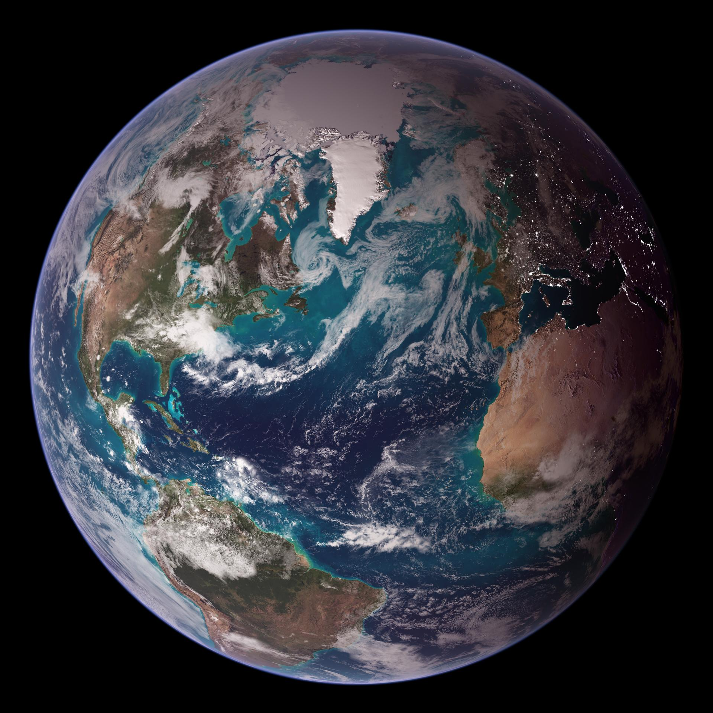
That planet was Earth.
Upon arriving, the satellite encountered an entirely different biological environment from the one in which its parent swarm had evolved. Earth possessed a diverse biosphere of multicellular organisms, including plants, animals, and fungi. The satellite began examining these organisms, collecting information about their molecular composition and internal biological organization.
The process involved the disassembly of organisms at the molecular level. The satellite swarm enveloped its targets and consumed them atom by atom, using its collective organization to acquire information about their construction. This was not merely the acquisition of nutrients. The organisms were being examined as biological structures, with the resulting information intended for transmission to the principal swarm on Kaimere.
The satellite's discovery of Earth's multicellular organisms represented a major expansion of the Portal's capabilities. The ability to reproduce inorganic resources and cultivate indigenous microorganisms had already made the swarm a successful environmental engineer. The acquisition of detailed biological information provided the means to reproduce entire organisms, introducing a new dimension to its ecological influence.
The first major collection of Earth life occurred during Earth's Late Devonian. The organisms acquired during this initial harvest were subsequently replicated on Kaimere, where they established populations in an environment that had previously been dominated by indigenous microbial life.
The Late Devonian Harvest and the First Multicellular Ecosystems
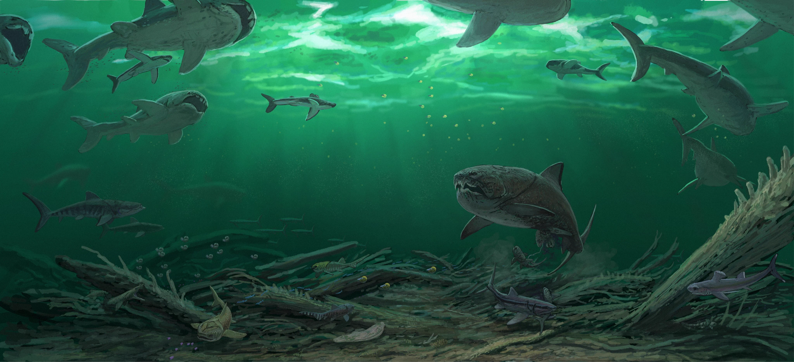
The initial Late Devonian harvest marked the beginning of Kaimere's transformation into a world dominated by Earth-derived multicellular organisms. The Portal replicated the collected organisms within its territory, introducing plants and animals into ecosystems that had previously been structured around native microorganisms and their colonies.
The resulting transformation was exceptionally rapid on geological timescales. Earth-derived plants began replacing the purple algae as the dominant visible components of many terrestrial environments. Animals and fungi followed, establishing new food webs and ecological relationships. The indigenous biosphere was not displaced entirely, but the introduction of multicellular organisms fundamentally changed the appearance and structure of the planet.
The Portal's preference for particular photosynthetic organisms appears to have contributed to this transformation. Its cultivated plant populations became increasingly important as sources of nourishment and environmental productivity, while the native purple algae continued to occupy important roles within aquatic and microbial ecosystems.
The initial harvest did not represent a single isolated introduction followed by an absence of further collection. Rather, it established the beginning of a continuing relationship between Earth and Kaimere. The satellite population on Earth began producing additional satellites of its own, which spread into different regions and ecological communities. These secondary swarms expanded the geographical reach of the harvesting system, allowing organisms from a greater variety of habitats to be collected.
The principal Portal on Kaimere consequently gained access to an increasingly diverse range of biological information. Its territory began developing forests, wetlands, shallow seas, deserts, mountains, and other ecological environments populated by organisms derived from different regions of Earth. The resulting ecosystems were not exact reproductions of Earth's communities, but assemblages assembled through successive collections and subsequent independent evolution.
The Expansion of Earth Harvests and Establishment of the First Dynasty

Following the initial Late Devonian introduction, further collections occurred at intervals of several million years. These harvests generally originated from the same broad planetary source, although the satellite system increasingly explored different geographical regions and ecological environments.
The expansion of the Earth satellite network was central to this process. As the original satellite population established additional colonies, clouds of harvesting organisms spread across Earth, collecting organisms from environments that had not previously been examined. Their findings were transmitted back to the principal swarm on Kaimere, allowing it to reproduce an increasingly diverse range of organisms.
The early harvests established the foundations of Kaimere's first major multicellular ecosystems. Over time, these communities diversified through independent evolution, producing numerous lineages that became distinct from their Earth relatives. The Portal's harvesting activity gradually slowed as the ecology of its territory stabilized.
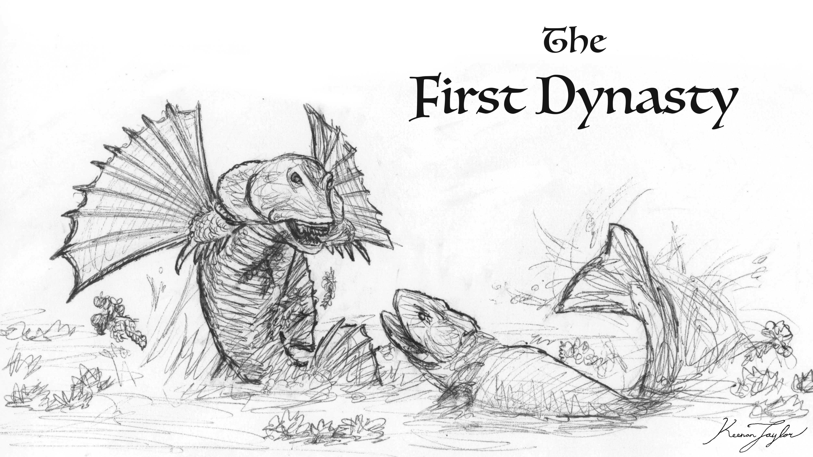
For almost forty million years, no major harvest occurred. During this prolonged interval, the organisms introduced from Earth diversified and established new ecological relationships. The resulting assemblage became known as the First Dynasty, a period in which Kaimere developed numerous distinctive clades of its own.
The First Dynasty represented an important stage in the natural history of the Portal. Its territory had become sufficiently productive and diverse that repeated introductions were no longer necessary to maintain the existing ecosystems. The swarm's activities entered a prolonged period of relative inactivity, allowing the organisms already established on Kaimere to diversify with comparatively little interference from new arrivals.
However, the stability of this period would eventually be disrupted by a catastrophic event.
The Middle Permian Mass Extinction and the First Great Harvesting Expansion

During Earth's Middle Permian, Kaimere experienced its first major mass extinction following the impact of an asteroid. The consequences were catastrophic. Approximately ninety percent of all life on the planet was destroyed, with only a small number of organisms surviving. The exceptions were primarily small fossorial and aquatic forms, while nothing larger than a small dog is believed to have survived.
The extinction devastated the Portal's territory. Its previously diverse ecosystems were reduced to a biological remnant consisting largely of small generalists and organisms occupying environments protected from the worst effects of the catastrophe.
The Portal responded with a dramatic increase in harvesting activity. Its satellite system began collecting organisms from Earth at a much greater rate, introducing a new assemblage of plants and animals to replace the lost biodiversity.
This response was unusual because it bypassed the conventional ecological process by which small surviving organisms gradually diversify into larger and more specialized forms. On Earth, the recovery of an ecosystem following a mass extinction is often driven by the descendants of surviving generalists. On Kaimere, the Portal could instead collect larger herbivores and predators directly from Earth, introducing them before the local survivors had undergone comparable evolutionary diversification.
As the vegetation and ecological conditions of Kaimere recovered, successive introductions from Earth's Middle and Late Permian rapidly occupied the available ecological roles. The resulting communities developed into a new assemblage of multicellular life, replacing much of the First Dynasty fauna.
The process was not uniform across the entire planet. Certain isolated regions remained inaccessible to the newly introduced organisms and developed their own distinctive clades from the survivors of the extinction. These isolated populations continued to diversify independently, producing endemic Kaimeran lineages that were not directly replaced by the Portal's new arrivals.
For the Portal, however, these isolated refugia were not necessarily a concern. Its principal territory had been repopulated, and the newly established ecosystems were once again productive. The increased harvesting activity eventually subsided as the biological condition of the Known World improved.
The Late Permian Golden Age and the End of the Harvesting Expansion

Shortly before the end-Permian extinction on Earth, Kaimere experienced another prolonged period of relative stability. The newly introduced organisms had become established, and the Portal's harvesting activity declined once more.
This represented the second major interval in which the Portal's territory entered a biological plateau following a period of extensive introductions. The organisms collected during the preceding harvests had diversified and established functioning ecological communities, allowing the swarm to reduce its activity.
The pattern established during this period would become characteristic of the Portal's subsequent history. Long intervals of ecological stability were interrupted by environmental catastrophes or major reductions in biodiversity, which provoked renewed harvesting from Earth. The resulting introductions would restore some ecological functions while simultaneously introducing new competition, disease, and predatory pressures.
The Portal's ecological strategy therefore produced repeated cycles of biological stability and disruption. Its interventions could increase biodiversity in the long term, but the immediate consequences were often destructive for the organisms already established on Kaimere.
04 · Mesozoic and Cenozoic Changes
Later Evolution History
The Recurrent Harvesting Cycles and the Development of Dynasties
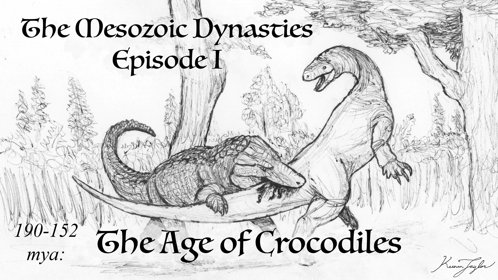
Following the early Permian events, the Portal continued to operate through alternating periods of extensive harvesting and relative stability. New dynasties emerged from the organisms introduced during these periods, diversified over millions of years, and eventually experienced ecological collapse or extinction.
When the biological condition of the Portal's territory deteriorated, the swarm responded by collecting additional organisms from Earth. The new arrivals occupied ecological roles that had become vacant or introduced new competitors into established communities. As the new populations spread, they transformed the ecological relationships of the Known World.
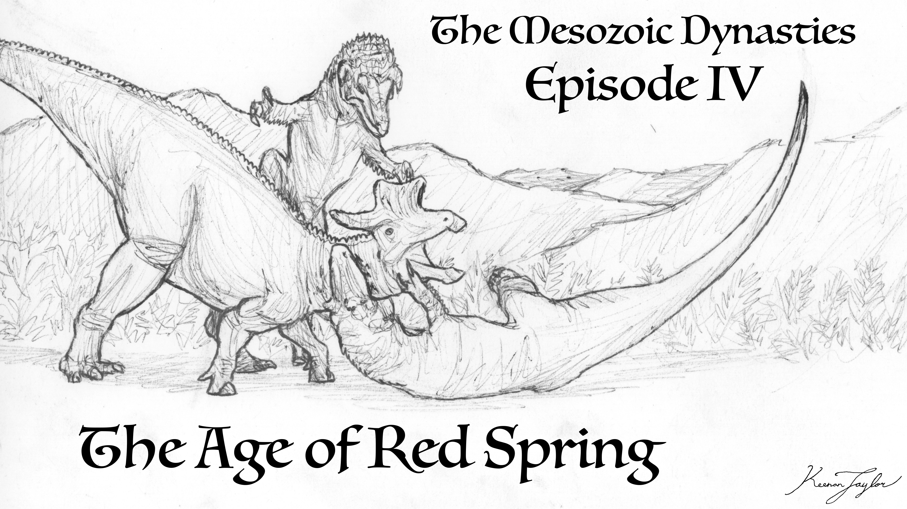
These harvesting expansions during the Mesozoic would continue for millions of years. It generally took between five and twenty million years of intensified harvesting before a new dynasty became established. During this interval, the Known World experienced substantial ecological fluctuation, with newly introduced organisms competing against older populations and often contributing to the extinction of organisms that had already been struggling to survive.
The process could become self-reinforcing. A decline in biodiversity might provoke a harvest, which would introduce new competitors and diseases. These arrivals could then cause localized extinctions, further reducing the stability of the ecosystem and potentially provoking additional harvesting.
Environmental change could produce similar outcomes. An arid period might reduce wetland populations, prompting the Portal to introduce organisms better suited to the new conditions. However, these introductions could also overwhelm native wetland specialists that were already struggling with the environmental transition. The result could be further ecological disruption rather than immediate stabilization.
The Portal's behavior is therefore not necessarily optimized for the survival of individual species or the preservation of existing ecosystems. Its apparent objective is the maintenance of a productive and diverse territory, but its methods can be destructive at the population and species level.
The successive dynasties of Kaimere represent the long-term consequences of this system. Each period of stability reflects the establishment of a biological community capable of maintaining itself with comparatively little external introduction. Each subsequent collapse creates the conditions for another period of harvesting and ecological reorganization.
The Tyrant Dynasty and the Modern Harvesting Spike
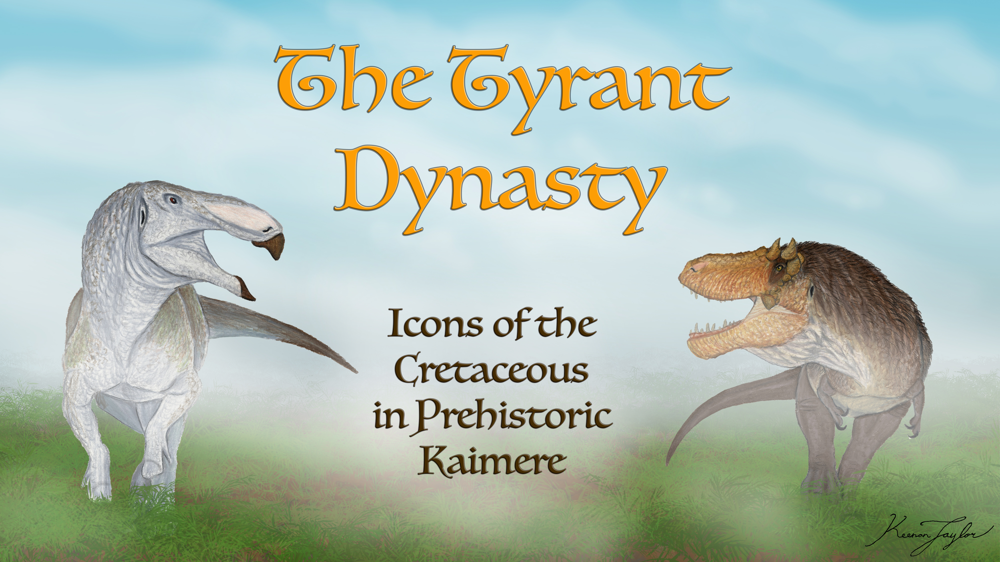
The Tyrant Dynasty was one of the longest and latest of Kaimere's major golden ages. It represented an extended period of ecological stability during which the organisms already established in the Known World diversified and maintained functioning ecosystems without the extensive introductions characteristic of a harvesting expansion.
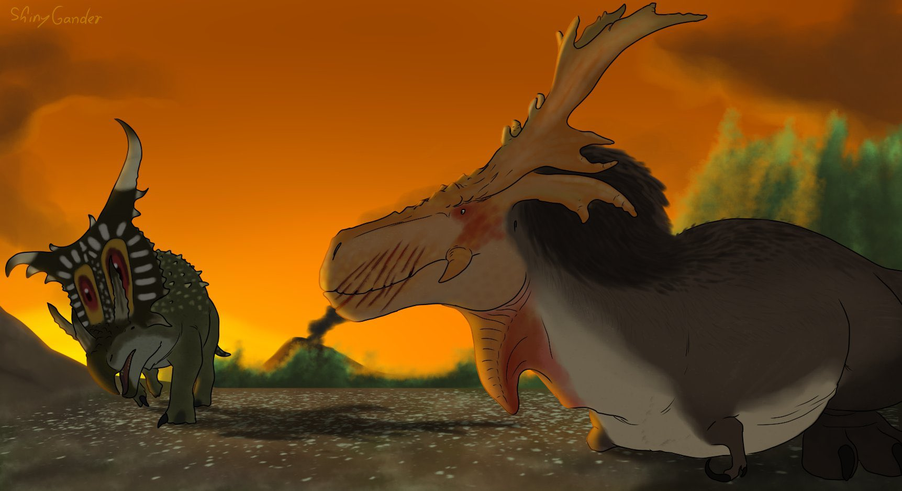
Its eventual conclusion approximately fifteen million years ago marked the beginning of the present major period of increased harvesting activity. The Portal's territory entered another phase of ecological disturbance, and its satellite system once again began collecting organisms from Earth.
This modern harvesting spike has continued for approximately fifteen million years. It has produced much of the extraordinary biodiversity now associated with the Known World, introducing organisms from a wide variety of Earth environments and geological periods.
The end of the Tyrant Dynasty was particularly important because it established the conditions for the modern composition of the Known World's ecosystems. The organisms introduced during this period have become deeply integrated into its biological communities, although their establishment has frequently resulted in the decline or extinction of older Kaimeran lineages.
The Portal's current activity must therefore be understood as part of a long-term ecological cycle rather than an isolated event. The Known World is not simply a stable region with an unusually high number of species. It is a biological system that has experienced repeated waves of introduction and ecological turnover for millions of years.
The Organization of Modern Earth Harvests
The modern harvesting process begins when the Portal on Kaimere detects a disturbance in the ecosystems of its territory. The exact signals involved are unknown, as is the precise mechanism by which the swarm determines that its biodiversity or productivity has fallen below its preferred condition.
When such a disturbance is recognized, the Kaimeran Portal communicates with its satellite system on Earth. The Earth population is then directed to undertake a new collection, generally from a region that was not heavily sampled during the preceding harvest.
A cloud of harvesting organisms travels to the selected region and disperses into smaller swarms. These satellites examine the local environment and begin collecting a range of plants, animals, and other organisms. The selection appears to be influenced by the ecological requirements of the Known World, although the process is imperfect and its underlying criteria remain poorly understood.
The Portal may attempt to collect organisms occupying ecological roles that are underrepresented in its territory. Alternatively, it may introduce organisms that can overwhelm populations already occupying particular niches. The relative importance of these strategies is uncertain, and there are instances in which the resulting harvest appears disproportionate or ecologically inappropriate.
The number and diversity of organisms collected seem to be loosely associated with the extent of the biodiversity loss in the Known World. Some harvests consist of only a few hundred individuals from a small number of species, while others involve thousands or even millions of organisms. Smaller social species may be collected in especially large numbers, reflecting the requirements of establishing viable populations.
.png)
The geographical extent of harvesting also varies substantially. Some collections are concentrated within relatively small regions of Earth, while others encompass enormous areas. One of the African harvests associated with the modern period was restricted to a region only a few hundred miles across. By contrast, the middle Pleistocene harvest extended across a vast region from India to the Pacific, encompassing territory from China southward to the northern part of Australia.
The duration of individual harvests is similarly variable. Some are completed within a few years, while others continue for thousands of years. There is no clear relationship between the duration of a harvest and the number of organisms collected. The Portal's criteria for initiating, continuing, or concluding a collection remain unknown.
05 · Organic Three-Dimensional Printer
Harvesting and Replication Process
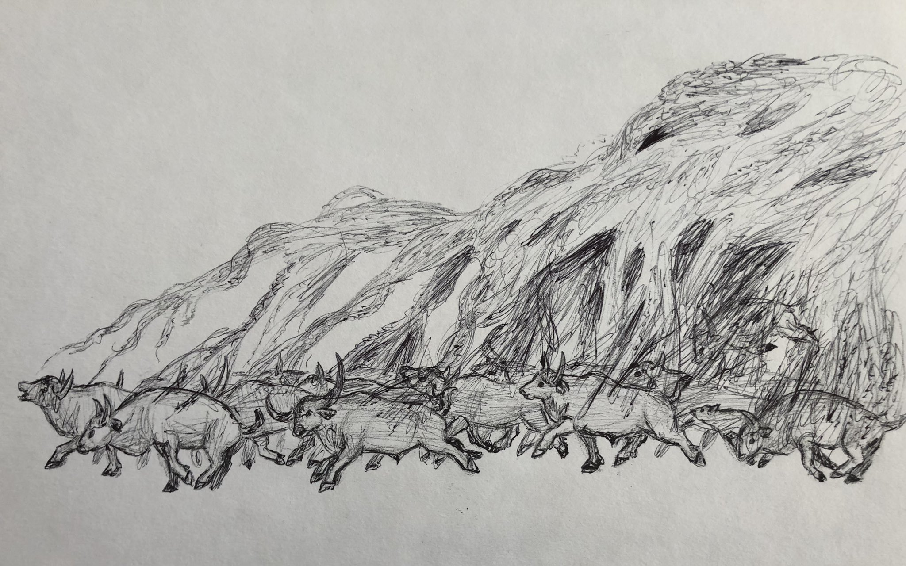
When a harvesting swarm encounters an organism selected for collection, it approaches from above and envelops its target. The swarm then begins consuming the organism atom by atom, using its collective organization to obtain a comprehensive understanding of its molecular composition.
The process is believed to be extremely painful. The organism is progressively disassembled as the swarm acquires the information necessary to reproduce it. Death is the inevitable result of the collection process, although the exact duration and subjective experience may vary between organisms.

The resulting information is transmitted to the Portal on Kaimere, where another swarm uses it as a blueprint for replication. The newly produced organism is an extraordinarily precise copy of the original. Its biological structure is reproduced with sufficient accuracy that even its memories are retained.
The replication of memories is among the most remarkable features of the Portal's activity. Organisms brought to Kaimere may retain their previous experiences, knowledge, and behavioral patterns, despite having been reconstructed from molecular information. Memories associated with the actual harvesting process are often indistinct or absent, although this is not universal.

Some observers have suggested that the Portal deliberately minimizes the psychological trauma of replication by preserving memories while obscuring the experience of being consumed. According to this interpretation, the swarm is attempting to produce organisms with the best possible chance of surviving in their new environment.
However, there is little evidence that the Portal possesses such consideration. Its ecological activities are not necessarily directed toward the welfare of individual organisms, and the preservation of memories may simply be an incidental consequence of its exceptionally precise replication process. The apparent absence of detailed memories of harvesting may also reflect the limitations of biological memory rather than a deliberate action by the swarm.
The replicated organisms are subsequently distributed throughout the Portal's territory. Their placement is generally intended to correspond with the habitats they occupied on Earth, although the resulting distributions are frequently imperfect.
06 · Spread of Life From the Portal
Ecological Distribution of Organisms
The Portal can reproduce organisms within a territory extending several thousand miles from its principal swarm. It attempts to place newly replicated populations in environments resembling those occupied by their Earth ancestors, but the process does not consistently produce suitable ecological distributions.

Some organisms are introduced into habitats that differ substantially from those in which they evolved. Others may be placed in regions where their ecological requirements cannot be met, or where competition and predation prevent their establishment.
The discrepancy between the Portal's precise biological replication and its imperfect ecological placement remains one of the most puzzling aspects of its behavior. An organism may be reproduced with its memories and anatomical characteristics intact, yet introduced into an environment that offers little prospect of survival.
The leading interpretation is that the Portal uses a relatively simple strategy for ecological regulation. Rather than attempting to calculate the complete consequences of every introduction, it may select several possible organisms or ecological arrangements and rely upon the success of at least one. This approach would explain why the Known World contains such a high diversity of organisms, including many that appear to occupy overlapping ecological roles.
The Portal may also be attempting to avoid niches that are already occupied, or alternatively introduce organisms capable of overwhelming established populations. These possibilities remain difficult to distinguish because the swarm's internal decision-making processes are not understood.
The results of its activities are nevertheless evident. The Known World has become one of the most biologically diverse regions of Kaimere, with extensive niche partitioning and unusually complex ecological communities. Its ecosystems contain a greater variety of large herbivores and predators than would ordinarily be expected in a region of comparable size.
The Portal's method is therefore imperfect but extraordinarily effective at generating biodiversity. Its repeated introductions have produced an ecosystem in which numerous lineages coexist, compete, and diversify in ways that would be unlikely under more conventional patterns of biological colonization.
07 · Weather Impact
Climatic Constraints on the Success of Harvested Organisms
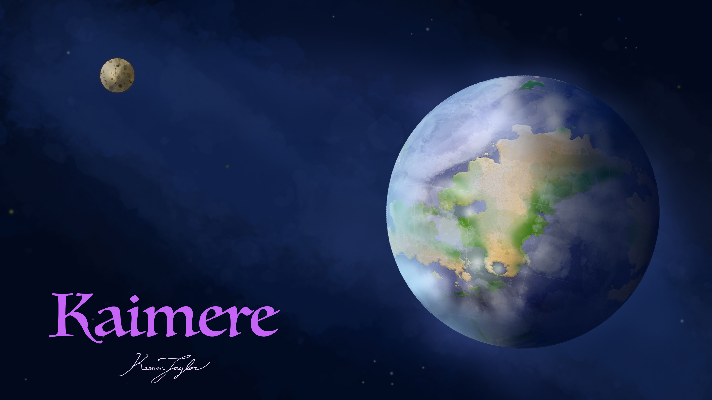
The environmental conditions of Kaimere impose substantial limitations upon the organisms collected by the Portal. The planet is generally warm and stable, a condition influenced in part by the forest cultivation activities of its large herbivores, particularly titanosaurs. Consequently, organisms collected from tropical and subtropical regions of Earth, or from periods when Earth's climate was comparatively warm, often establish themselves more successfully than species adapted to cold environments.
Temperate and cold-adapted organisms frequently struggle after introduction. Their physiological adaptations may be poorly suited to Kaimere's warmer lowlands, and they can become vulnerable to heat stress, exhaustion, and predation.
Marine organisms may have greater opportunities for survival because they can migrate into cooler waters. Terrestrial species, however, are often restricted by the geographical distribution of suitable highland environments.
This limitation was particularly evident during the harvest from northern Eurasia approximately 700,000 years ago. The collection introduced numerous marine organisms that subsequently flourished, but many terrestrial species were adapted to cold conditions that had no direct equivalent in the Known World.
Several iconic Ice Age mammals died out rapidly after their introduction, unable to withstand the warmer climate and the unfamiliar ecological pressures. Heat exhaustion was a major factor, compounded by the disorientation experienced by newly harvested animals and the predation pressures imposed by established Kaimeran fauna.
The western continent's mountains and highland prairies provided a partial refuge. Cold winds associated with northern ocean currents produced cooler conditions, while the local vegetation was less suitable for the dinosaurs dominating the warmer lowlands. These environments allowed certain cold-adapted mammals to persist after their failure elsewhere.
Cave bears and lions, for example, found success in these colder regions, although they disappeared from other parts of the Known World. Palaeoloxodon was among the organisms able to transition relatively successfully into warmer forests, possibly because its recent ancestors had already occupied subtropical environments.
The styrachonichid megaraptorans is another example of a lineage that persisted in the western mountains, remaining relatively similar to its ancestors while struggling to compete with the giant cervids that occupied the same environments. By contrast, populations that adapted to the hot-house prairie became considerably more successful, with prairie elk accounting for approximately ninety-five percent of the surviving descendants of their harvested lineage.
These patterns demonstrate that successful harvesting does not guarantee successful establishment. The Portal can reproduce organisms with extraordinary precision, but it cannot necessarily reproduce the environmental conditions required for their survival. Its introductions are therefore subject to the same ecological constraints that govern all living organisms on Kaimere.
08 · Portals Range throughout History
Natural Contraction and Expansion of the Portal's Territory
The geographical extent of the Portal has changed repeatedly throughout Kaimere's history. Its territory generally conforms to the Known World, but the boundaries of this region have never been permanently fixed.
The Portal's range appears to contract during warm and humid periods, when the productivity of its territory is high and fewer additional regions are apparently required to maintain its preferred ecological conditions. During arid periods, it has expanded farther into surrounding regions, possibly because the deterioration of environmental conditions requires a larger territory to maintain sufficient biodiversity.
The original distribution of the Portal extended between the tropical regions of Ni'Khar and Kairul. Its subsequent movement southward was associated with the volcanic devastation of the Dynastic Extinction. The accumulation of volcanic ash severely disrupted its populations, apparently forcing the swarm to abandon much of its previous range and establish itself farther south.
The movement was also influenced, or possibly constrained, by the presence of other indigenous organisms. During the Tyrant Dynasty, the Portal is believed to have avoided the territory of Üshalek, an elder swarm associated with the eastern forests of Ni'Khar. When it moved south following the volcanic disturbance, it appears to have established its territory beyond the southern boundary of the forest god's range.
Other powerful indigenous organisms may also have influenced its distribution. One is believed to inhabit the Arvelith mountain range, while another is associated with the forests and deserts of western Ni'Khar. Their presence may have imposed additional limits upon the Portal's expansion, although the nature of these relationships is not established.
The Portal's modern territory is generally considered to represent the range it occupied throughout the past fifteen million years of Cenozoic harvesting. Its geographical influence is therefore closely associated with the biological history of the Known World, although its exact boundaries have varied over time.
09 · How the "Gods" Ended the Natural Harvesting Cycle
The First Children's Interference
The Portal's natural harvesting cycle continued for hundreds of millions of years, producing successive periods of ecological expansion, stabilization, and collapse. Its activities shaped the biological history of Kaimere from the Late Devonian through the subsequent geological eras, repeatedly introducing new organisms and transforming the composition of its ecosystems.

This natural cycle eventually came to an abrupt end with the expansion of the First Children, an ancient civilization of small, archaic humans that had developed an extraordinary understanding of Kaimere's indigenous magic.
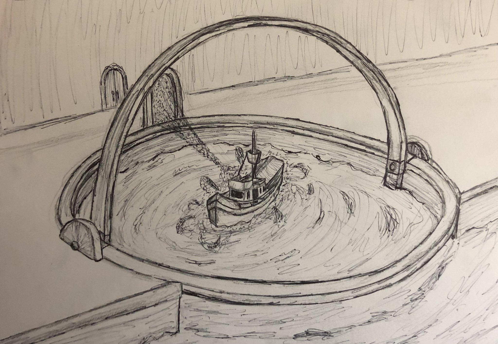
The First Children were capable of manipulating the indigenous microbial swarms that shaped the planet's environments. Their civilization produced numerous artifacts demonstrating an advanced understanding of these organisms and their unusual abilities. Their most consequential creation was the device that would become known as the Whistling Door.
Between approximately 14,000 and 10,000 years ago, the First Children constructed the device to contain and control the Great Portal. The artifact captured the previously independent swarm and transformed its natural operation. Rather than functioning solely as an ecological organism that collected and replicated organisms between worlds, the Portal became a controllable passage between Earth and Kaimere.
The Whistling Door is named for the strange humming and whistling sounds emitted by its horseshoe-shaped frame. It is also known as the Shrieking Gate, reflecting the unusual sounds associated with its operation. The device remains the greatest known legacy of the First Children and the principal mechanism through which the Portal is now accessed.
The First Children did not create the Portal itself. They encountered an existing indigenous organism and developed a means of controlling it. Their achievement was therefore not the creation of interstellar biological replication, but the transformation of a natural phenomenon into a controlled interplanetary passage.
The construction of the Whistling Door fundamentally altered the relationship between Kaimere and Earth. What had previously been a largely one-directional ecological system, in which organisms were collected from Earth and reproduced on Kaimere, became a passage capable of permitting travel in both directions. The natural harvesting cycle was no longer operating independently in its original form.
The Portal remains contained within the Whistling Door to the present day. Its original ecological function and the extent to which it continues to influence the Known World under confinement are not fully understood. Nevertheless, its historical activities remain visible throughout the planet's ecosystems, and its legacy is present in virtually every multicellular organism that defines Kaimere.